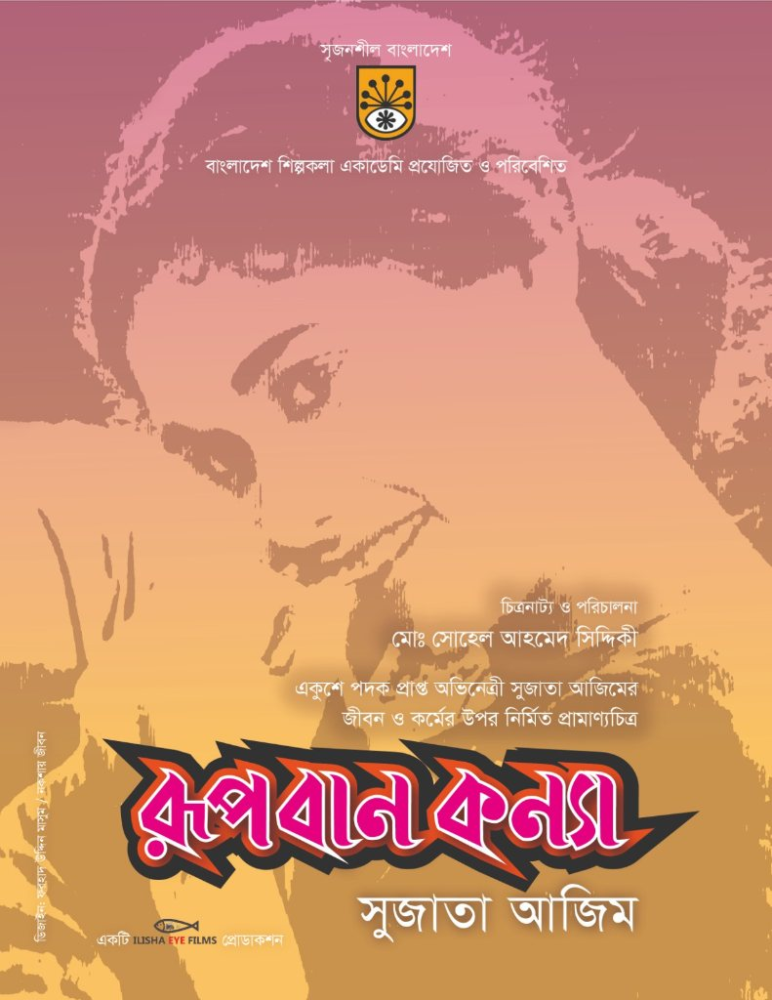
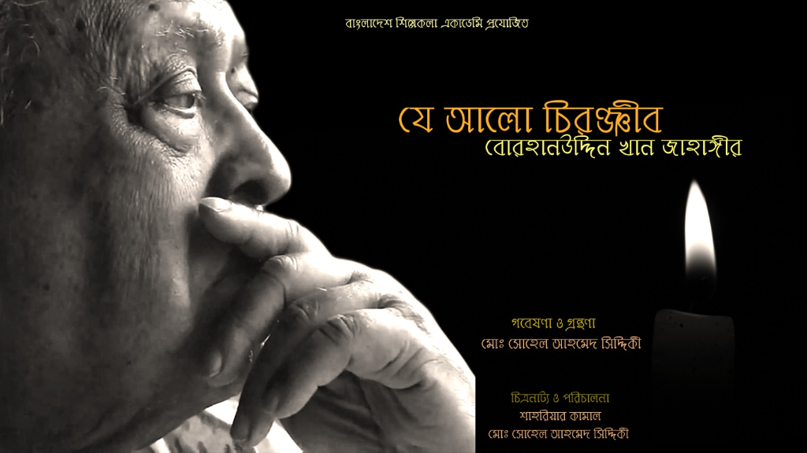
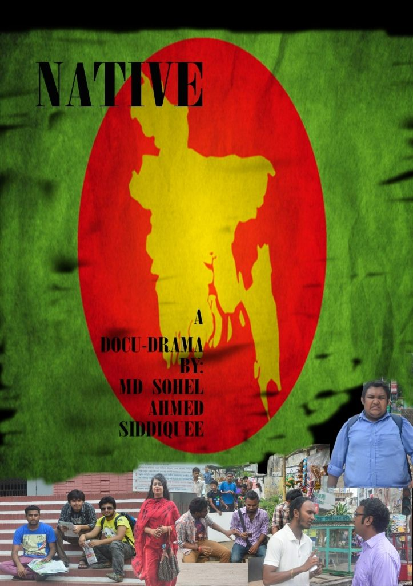
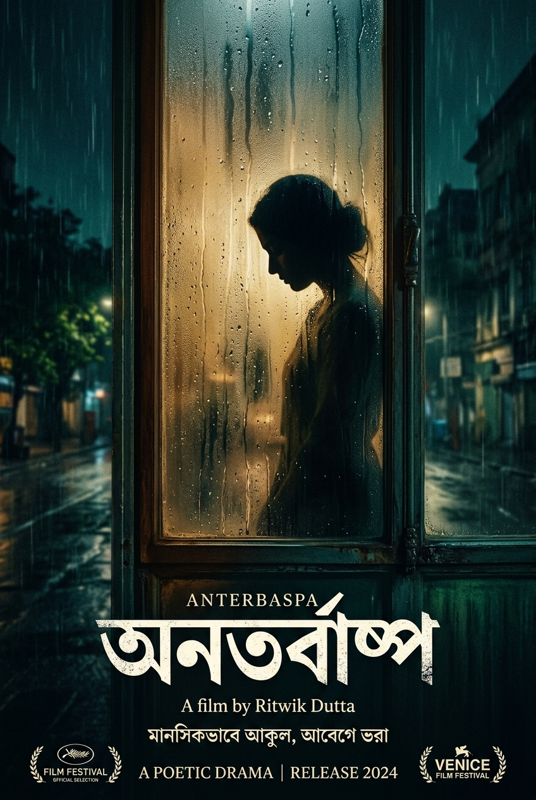

Documentary Filmmaker & Director
Syed Oasiuddin Ahmed
5 Films as Director


Film Director, Screenwriter & Producer
Sohel Ahmmad Siddiquee
4 Films as Director / Creator

রূপবান কন্যা
একুশে পদক প্রাপ্ত অভিনেত্রী সুজাতা আজিমের জীবন ও কর্মের উপর নির্মিত প্রামাণ্যচিত্র। চিত্রনাট্য ও পরিচালনা: মোঃ সোহেল আহাম্মদ সিদ্দিকী।

যে আলো চিরঞ্জীব
Je Alo Chironjib : BK Jahangir
গবেষণা, গ্রন্থনা, চিত্রনাট্য ও যৌথ পরিচালনা: মোঃ সোহেল আহাম্মদ সিদ্দিকী ও শাহরিয়ার কামাল। বরেণ্য চিন্তাবিদ বোরহানউদ্দিন খান জাহাঙ্গীরের উপর প্রামাণ্যচিত্র।

নেটিভ
A docu-drama created and directed by Md Sohel Ahmmad Siddiquee, exploring urban alienation and cultural roots in Bangladesh.

অনতর্বাষ্প
Upcoming fiction feature film examining psychological intricacies and intimate human relationships.
Documentary Filmmaker, Researcher & Musician
Sandip Kumar Mistry
7 Documentaries as Director & Researcher

জোহরা
Zohra : A Trailblazer of Troubled Times
বেগম জোহরা তাজউদ্দীনের জীবন ও সংগ্রামের উপর নির্মিত প্রামাণ্যচিত্র। গবেষণা, চিত্রনাট্য ও পরিচালনা: সন্দীপ কুমার মিস্ত্রী। প্রযোজনা: বাংলাদেশ মহিলা পরিষদ।

জ্যোতির্ময়
১৯৭১ সালে শহীদ বুদ্ধিজীবী অধ্যাপক জ্যোতির্ময় গুহঠাকুরতার জীবন ও কর্মের উপর নির্মিত প্রামাণ্যচিত্র। আন্তর্জাতিক চলচ্চিত্র উৎসবে সেরা প্রামাণ্যচিত্র পুরস্কার প্রাপ্ত।

বাসন্তী
Basanti : A Struggle for Spring
প্রান্তিক আদিবাসী ও গ্রামীণ জনগোষ্ঠীর অধিকার ও নারী মুক্তির ঐতিহাসিক লড়াইকে কেন্দ্র করে নির্মিত প্রামাণ্যচিত্র। নিউ ইয়র্ক বাংলা ফিল্ম ফেস্টিভ্যালে মনোনীত।

একাত্তরের নৌ-কমান্ডো
১৯৭১ সালের মুক্তিযুদ্ধে নৌ-কমান্ডোদের দুঃসাহসিক অপারেশন জ্যাকপটের ঐতিহাসিক ঘটনা ও আত্মত্যাগ নিয়ে নির্মিত তথ্যচিত্র। পরিচালনা ও সুর: সন্দীপ কুমার মিস্ত্রী।

মুজিবনগর সরকার
১৯৭১ সালে গঠিত স্বাধীন বাংলাদেশের প্রথম সরকার—মুজিবনগর সরকারের গঠন, আন্তর্জাতিক কূটনীতি ও ঐতিহাসিক তাৎপর্য নিয়ে গবেষণাভিত্তিক প্রামাণ্যচিত্র।

আপন আলোয়
গ্রামীণ নারী ও প্রান্তিক জনপদের আত্মমর্যাদা, মানবাধিকার ও শিক্ষামূলক জাগরণের উপর নির্মিত প্রামাণ্যচিত্র। প্রযোজনা: আরআইবি ও কিনো-আই ফিল্মস।

কৃষি প্রতিবেশের গান
ঐতিহ্যবাহী লোকসঙ্গীত গম্ভীরার সুরে বাংলার কৃষিব্যবস্থা, দেশীয় বীজ ও পরিবেশ সুরক্ষার অঙ্গীকার নিয়ে নির্মিত প্রামাণ্যচিত্র। পরিচালনা ও সুর: সন্দীপ কুমার মিস্ত্রী।